(2007-11-18 20:14:06)
一周多没上课程，虽然是周末，也破例上上吧。【韶山映山红】缠师主张周末放下股票的事，108课里面，只有62课在周六，68、84、89、105课在周日。89课2007年11月18日，星期日。88课是2007年11月6日，前一周的星期二。缠师还是习惯把有编号的博客作为课程，难怪很多散落在其他文章或者问答里的重要内容会被一部分人忽略。】
今天见了好几拨人，等一下8点半还有一拨，没办法，出去这么久，只能当补课了，所以只能快速写写。【韶山映山红】一刻钟写这么多内容，缠师胸有成竹，下笔如有神。】
大概很多人都想，上次说的中阴阶段也没什么特别的，其实也是一个盘整，和其他的盘整也没什么不同。【韶山映山红】那么，和其他的盘整都有哪些不同呢？或者进一步说，有不是中阴阶段的盘整吗？要好好想一想。★可以做个专题，以后研究。】线段级别走势中阴阶段的前提是线段类趋势背驰，否则就有中枢，中枢本身就是中阴中枢，还是绕回了线段类趋势背驰的分析。中枢级别走势中阴阶段就是扩展升级中枢的分析，这时候不需要再去划分中枢级别的线段类趋势，而是直接做中枢分析。】
如果有这种想法，就有大问题了。
中阴阶段能否处理好，关系到操作节奏的连接问题。
很多人的操作节奏特乱，就是因为不知道中阴阶段的问题。【韶山映山红】操作节奏在中阴阶段被打乱了。】
中阴阶段，虽然表现为中枢震荡，但并不是一般性的中枢震荡。【韶山映山红】有哪些异同？★可以做个专题，以后研究。】
【韶山映山红】中阴阶段是坐等第三类买卖点的方向选择，“一般性的中枢震荡”研究的是中枢延伸的过程。如果没有能力把控这个延伸过程中的震荡，就要选择避开，也就是说，开始中阴阶段的背驰点就选择离开，等中阴中枢的第三类买卖点再选择进出。这样就不会被打乱节奏。】
另外，特别要注意，精确的理论，当然也可以很粗略地说，
例如，所有人都知道，市场不是上就是下或者就是盘整，这本质上是废话。但废话的另一面，就是公理。这个废话，刚好表现了市场的本质。【韶山映山红】精确的中阴阶段，很粗略地说，就是盘整，表现为中枢震荡。】
就如同欧氏平面几何里，说两点之间只能有一条直线。这对于常识来说，就是废话。但这废话就是公理，关于欧氏平面几何里的公理，这个公理正好反映了欧氏平面几何的本质特征。
同样，市场不是上就是下或者就是盘，这一点，刚好反映了地球上现在所存在的股市的特征。完全有可能在别的星球上的股市，就存在第四种情况，那里有和我们的思维有着完全不同的分类。
但更重要的一点是，知道了公理，其实什么都没知道。这其实也是中国人思维里的一个大弱点。中国人喜欢大而化之地讨论问题，结果最终讨论的都是废话，都是所谓的公理，或者说就是我们的共业所生的东西。
但科学，特别对于具体操作来说，这些大而化之的东西，没有任何意义。例如，市场上的操作，是一就是一，多一分不行，少一分也不行。所以，这里，必须有严密的逻辑思维习惯，而且是精确思维的习惯。【韶山映山红】缠论的“精确思维的习惯”体现在哪里呢？笔线段的初始化？走势类型与中枢的递归？还是其他？★可以做个专题，以后研究。★】
【韶山映山红】我觉得，体现在，任何走势都有可以对标的标准答案，由此可以做到是就是、不是就不是的精确。】
我们从公理出发，并不意味着我们就停留在公理的水平上。否则，欧氏几何就是干瘪瘪的5条公理，那还研究干什么？同样，讨论市场，不是上就是下或者就是盘，那样什么都别研究讨论了，抛硬币就可以。
【韶山映山红】欧式几何的五条公理是：１、任意两个点可以通过一条直线连接。２、任意线段能无限延伸成一条直线。３、给定任意线段，可以以其一个端点作为圆心，该线段作为半径作一个圆。４、所有直角都全等。５、若两条直线都与第三条直线相交，并且在同一边的内角之和小于两个直角，则这两条直线在这一边必定相交。】
中阴阶段的存在，就在于市场发展具体形式在级别上的各种可能性。【韶山映山红】所有的中阴阶段都面临级别的选择吗？191这个转折面临级别的选择。或者说，趋势背驰之后的中阴阶段都面临级别的选择。盘整和小转大呢？这个问题还要好好想一想。★以后研究。】
这些可能性的最终选择，并不是预先被设定好的，而是市场合力的当下结果，这里有着不同的可能性。【韶山映山红】完全分类，列出所有的可能性。】
而这些可能性，在操作上并不构成大的影响，因为都可以统一为中阴过程的处理。【韶山映山红】怎么样“统一为中阴过程的处理”？需要做个程序化的东西。★以后研究。】
例如，这次从6004点开始的1分钟级别下跌背驰后，就进入中阴时段。【韶山映山红】6004点就是线段划分的191点，“从6004点开始的1分钟级别下跌”是一个a+A+b+B+c+C+d下跌趋势，到214点是“1分钟级别下跌背驰”。是1分钟级别的什么走势？什么样的背驰？★以后研究。】
首先，根据走势分解的基本定理，就知道，其后的行情发展，一定是一个超1分钟级别的走势。【韶山映山红】“超1分钟级别的走势”不包括1分钟级别。也就是说，至少是5分钟级别。那么，趋势+反趋势怎么说？背驰点可以知道一定“超”吗？★以后研究。】这个下跌本身是非背驰下跌，所以排除同级别反趋势的选项。】
【韶山映山红】“缠中说禅走势分解定理一”：任何级别的任何走势，都可以分解成同级别“盘整”、“下跌”与“上涨”三种走势类型的连接。 “缠中说禅走势分解定理二“：任何级别的任何走势类型，都至少由三段以上次级别走势类型构成。】
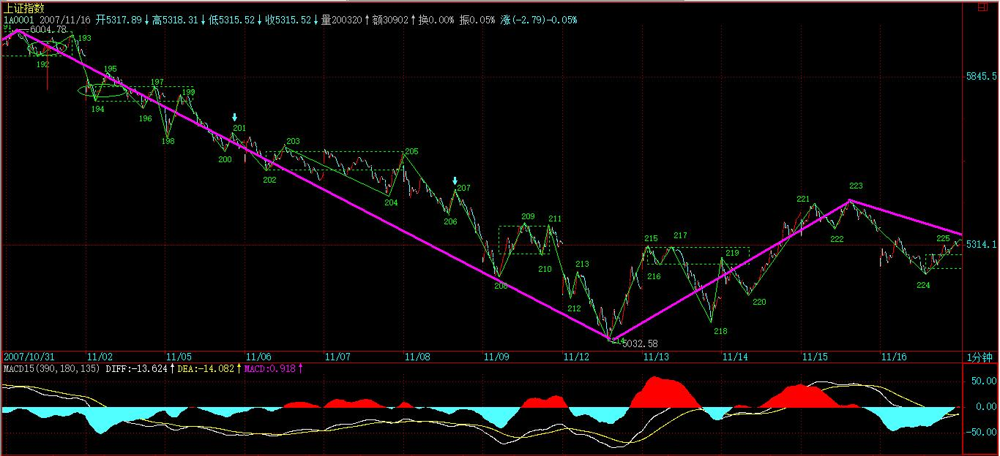
【韶山映山红】静姐解读这个“超1分钟级别的走势”是１分钟下+一分钟反弹+一分钟下。从这个角度看，说得通。】
但超1分钟级别的走势，存在很多可能，就如同一个人死后在中阴阶段，也存在着多种可能：人、鬼、神、阿修罗、地狱、畜生等等。【韶山映山红】佛教中，六道分为三善道（天、人、阿修罗）和三恶道（畜生、恶鬼、地狱）】
这些可能，首先一个最基本的原则是，必须先出现一个5分钟中枢，因为无论后面是什么级别的走势，只要是超1分钟级别的，就一定先有一个5分钟中枢，这没有任何特例的可能。而这个100%成立的结论，就构成我们操作中最大也是100%准确的基本依据。
1分钟级别的走势后，你不能说他一定是下还是上还是盘，因为都有可能。但你一定能说，他最终必须先有一个5分钟中枢，这是100%的，而且，只有本ID的理论才能明确给出这样的必然结论。
有了这个结论，一切关于行情后续演化的争论都没有了意义。不管后面是什么，首先把这5分钟中枢给处理好，这才是唯一重要而且有着100%操作性与准确性的事情。
因此，你在操作中，脑子里必须有这样一个100%准备的判断。而5分钟的中枢震荡如何操作，那是最简单的幼儿园问题，如果还不懂，上面有88节课程，请好好再学学。
当然，如果你是按5分钟以上级别操作的，那么这个5分钟中枢的中阴过程对于你来说可以说是不存在的，你可以根本不管。
而这5分钟中枢成立后，就必然100%面临一个破坏的问题，也就是一个延伸或着第三买卖点的问题，而这也是超级幼儿园的问题，不懂就回头学。【韶山映山红】中枢的破坏，包括“延伸”或者“第三类买卖点”两种。】
当然，如果这中枢不断延伸，搞成30分钟中枢了，那就按30分钟中枢的第三买卖点来处理，如此类推，总要面临某一个级别的第三买卖点去结束这个中枢震荡。
一般性的，我们可以以5分钟中枢后就出现第三类买卖点为例子，那么，这个1分钟的走势，就演化为5分钟的走势类型，至于是只有一个中枢的盘整，还是二个中枢的趋势，那用背驰的力度判断就可以把握，这也是幼儿园问题。【韶山映山红】盘整的结束和趋势一样，都是当下力度的判断。★】
例如现在，如果已经形成的5分钟中枢出现第三类卖点，那么，就算共同富裕的目标达不到，全面小康肯定是没问题了。【韶山映山红】回6100没戏了，有个像样点儿的反弹也凑合，首先需要的是跌出空间来，所以说的是出现三卖。】
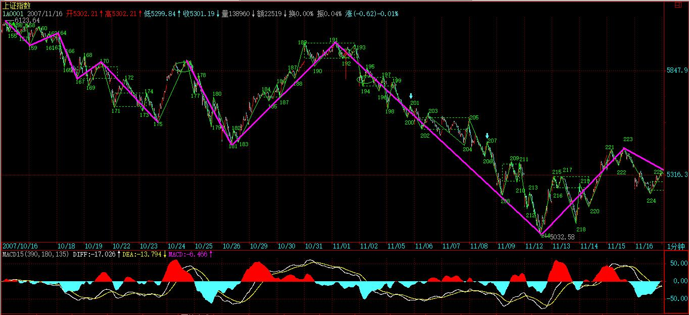
从上面就可以看到，本ID的理论是这样把一个看似复杂，没有方向的中枢问题，以100%准确的逻辑链连接成一个可以100%具有准确操作度的简单操作程序，而这，不过是本ID理论的最低级威力而已。
这里，必须再次说明，本ID理论的盘整和一般所说的区间震荡盘整的概念不是一回事，指数从10000点跌到0也可以是一个盘整，只要中间只有一个中枢。
另外，盘整和中枢也不是一个概念。中枢如果是苹果，那么盘整就是只有一个苹果的苹果树，而趋势就是可以有两个以上直到无穷个苹果的苹果树。你说苹果和苹果树是一个概念吗？
另外，千万别以为盘整就一定比趋势弱，有些盘整，第一段就杀得天昏地暗的，后面一段，即使力度没有第一段力量，两者加起来，也可以超越所谓的趋势了。【韶山映山红】“第一段”和“后面一段”分别是盘整中枢的进入段和离开段？★以后研究。】
还是上面的比喻，只有一个苹果的苹果树，难道一定比有100个苹果的苹果矮？显然不是的。【韶山映山红】区分盘整和趋势的目的是什么？★★★以后研究。】
所以，那些连中枢、盘整、趋势都没搞清楚的，就请虚心点好好去学习。
本ID的理论，不会因为多一人学了而多一分准确性，更不会因为少一人学了多一人反对了而少一分准确性，这就如同三角型之和180度，只要在欧氏平面里，你爱信不信，都不会变成179度的。
(2007-11-19 15:13:40)
本周被安排得满满的，明天解盘要在晚上，后面还要出一次差，所以，有什么照顾不到的，请原谅。
快速说两句。今天就是大搞阶级斗争，把中国神（华）、（石）油为代表的大土豪给狠揍几下，然后像奥运、VC、【韶山映山红】600635大众公用】军工等等的垃圾股票就显摆显摆。
其实这很正常，本ID听说，在男猿人的ED世界里，世界第一名牌是印度神油。中国神油，大概有点水分，所以先挤挤才能成为合格产品，这点，男猿人的认识应该比本ID更清楚，本ID就不敢男猿门说神油了。
但阶级斗争，经常有胡汉三又回来的时候。反正，题材垃圾与中字神油，来回折腾的局面是一时难以改变了，这就构成了最基本的两大阵营的轮流举旗。【韶山映山红】所谓二八转换。】
技术上，大盘的5分钟震荡依然，所以，继续按中枢震荡的规矩操作就可以，当然，现在指数的意义不断下降，所以可以根据具体板块的图形决定操作。
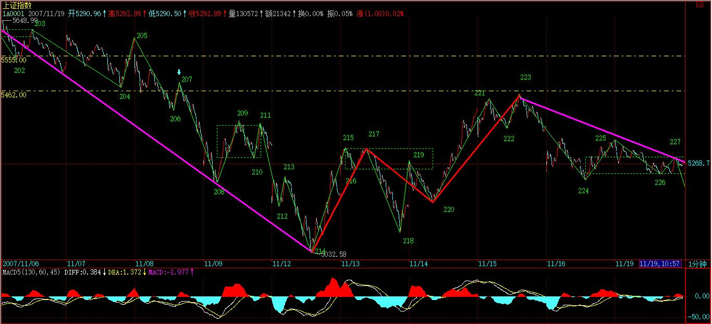
和谐，从来都不会从天上掉下来，和谐，最终只能是阶级斗争的结果。阶级调和，是不会调和出和谐来的。
打土豪，分田地；然后胡汉三再回来。不断地轮回，世界本来就是如此。怕，也要世界。不怕，也要世界。世界就是世界，关和谐屁事。
在所谓和谐的世界里，反对和谐的，就成了异端，就有了阶级，就有了斗争。
世界是否和谐并不重要，世界的重要性只有一点：无论现实是否血淋淋，现实就是现实，不能装饰，任何的装饰，最终都会成为历史的笑话。
最华丽的裹尸布包裹的尸体，依然只是尸体。当然，尸体是可以用来人肉叉烧包的。抱歉，这话可不是本ID说的，那是施耐庵未被尸体时说的，如果有什么意见，找他鞭尸去，不过前提是，他没被人肉叉烧包了。
上面是解盘与今晚帖子的混合，这样的文体如果不适应，对此产生不良反应，那请原谅，本ID不会写和谐文章。
真正的文章，从来都不会是和谐的。
“大凡物不得其平则鸣。草木之无声，风挠之鸣；水之无声，风荡之鸣。其跃野，或激之；其趋也，或梗之；其沸也，或炙之。金石之无声，或击之鸣；人之于言也亦然。”【韶山映山红】韩愈《送孟东野序》】
不和谐才有真文章。
今晚无帖子。
先下，再见。
(2007-11-20 09:05:23)
今天解盘在晚上，抱歉。
和谐世界存在的N种可能：
一、 人都死光。
二、 国家死光。
三、 种族死光。
四、 宗教死光。
五、 信仰死光。
六、 利益死光。
七、 所有该死光的都一个不少地全死翘翘了。
注意，所有上面的条件都同时成立，大概能构成一个和谐世界存在的可能。除此之外，几无任何可能。甚至，以后科学昌明，发明一种和谐世界试剂，人人生下来都先打一针，也有例外，药力失效、基因变异等等最终破坏和谐世界的可能。所以，要和谐世界，也只有上面这种可能了。
只要有两个以上的活人，有两个以上的国家、种族、宗教、信仰、利益等等，和谐世界，只能是一个口号。
口号是什么？口号就是为了忽悠别人的，骗别人入套的。就像美国喊民主，那就是一个口号，就是为了蒙人入套。
世界上最蠢的是什么人？就是自己制造一口号，最终相信自己的口号真能现实的人，也就是说自己被自己的忽悠给忽悠了的人。美国人不蠢，为什么？因为美国人喊民主口号时，自己从来不相信。他们只相信武力、文化侵略、胡萝卜加大棒。民主，不过是一层包装而已。
不管多少和谐世界的口号，石油的价格只会根据利益的斗争的合力去变动，就算你让全世界一起念和谐世界六亿亿亿次，利益的合力该怎么还是怎么了。
美圆贬值、所有资源类大涨等等这些共同出现的现象，连最傻的人都应该知道，这是战争行为，这是有预谋有计划的战争行为，喊和谐世界又屁用，这比义和团喊刀枪不入还要愚昧。
这一切，难道很难预见吗？本ID在N年前写《货币战争和人民币战略》时，已经写得再清楚不过了。
人口消费化与资产虚拟化导致的经济增长，是一个经济的客观规律，全世界一样，到这个阶段，就会出现这样的事情，本ID在前面已经很明确地指出了。关于人口消费化与资产虚拟化的规律，以前没人说过，但并不是不存在了，或者因为本ID说了才存在，这是客观规律，本ID只是把他揭示出来了。
在这种规律作用下，经济奇迹就如同太阳到时间要升起一样自然，没什么可骄傲，因为这是理所当然的事情。本ID说了，只要不干最傻、历史上做超级弱智的事情，这经济增长规律下，经济奇迹就会继续奇迹。
但是，经济奇迹发展到一定规模之后，就会发生演变，发生可能的变化。为什么？因为经济容量是有限的，一旦一个经济体的容量达到一定地步后，所有的条件将产生变化，内外部的压力将逐渐和经济奇迹的原动力产生新的合力平衡，这时候就是一个坎。过去了，就继续牛下去；过不去，就会出现经济的反作用力，就会出现大调整。
日本就是一个最典型的例子，就是某个坎没过去。但平心而论，日本人能达到现在的水平，已经是超有能力了，那个坎，站在日本的原始条件下，估计也没谁能真冲过去。
但中国不同，中国的原始条件比日本好多了，中国如果最终倒在与日本类似的坎上，那是历史的大笑话，这才是问题的关键所在。
本ID在N年前开始写这一系列的文章，就是要为破这个坎做准备。因为，到这个坎之前，一切都会继续热火朝天，直到这个合力的平衡处，才会出现可能的变数。
如果说，前面可以靠国运，那么，后面更多地要靠智慧了。但，智慧又在哪里呢？
和谐世界，可以继续口号。但以什么标准去和谐呢？美国有他们的标准，有多少国家就有多少标准。不同的标准，不同的利益，最终决定世界的，只能是斗争的合力。
这是一个力的世界，力才能和谐世界。
(2007-11-20 23:44:07)
严重对不起，事情太多，忙到现在才回来。还好，赶得上24点，至少今天晚上解盘这个承诺能够实现。
今天的大盘，依然在中阴状态中无方向地震荡，这是一个中阴状态中的常态，目前，这个5分钟的中枢震荡继续维持，如果继续下去，就会延伸出30分钟。抬头刚好看到有点不太圆的月亮，月圆的时候，这中枢震荡是否能结束呢？
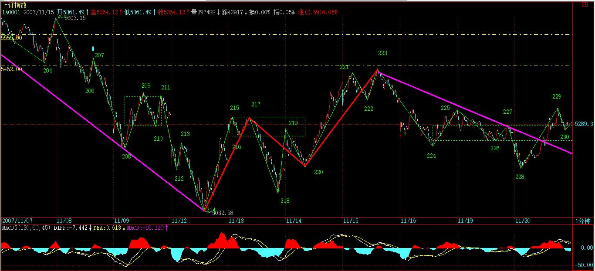
其实，现在某种程度上是一个新状态的熟悉过程。由于这中国神油的威力太大，所以如何与前期板块进行指数调控上的配合，总要有一个熟悉的过程。现在是小幅度的试验，然后，当然会有幅度大点的试验，试验力度逐步加大，也是正常的。
板块上，题材股继续表现，但中字股今天也开始有点热身，目前的震荡，有利于MACD的收口，一旦日MACD收口成功，那么大盘的反弹空间将打开。此外，一般图形走成这样，无论这里是否成为短线真正的底部，就算往下跌破，也是空头陷阱为多了，其中的操作，继续以中枢震荡的方法对待，这样就十分简单了。
其实，从中线的角度，反而是这次反弹上去后的走势更关键，如果不能有效突击上去，那么下次调整的压力才是真正严重的，特别不能出现MACD日转头后不能上0轴的情况，一般出现这种情况，后面都意味着更严重的下跌。只要不出现这种情况，问题还不是太严重。
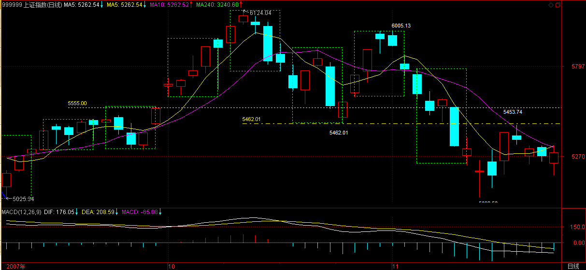
中线的角度，目前5月线依然能被守住，所以本月收盘很重要，只要能守住5月线，多头就算成功了，否则，后面多头被屠杀就不值得任何同情。
目前，中枢震荡中，就是涨不上去杀多头，跌不下来杀空头，两头杀，才是正路。当然，你需要有这工夫，否则连中枢都分不清楚，那还是拿小板凳吧。
至于个股，本ID说了，本ID说过的个股，站在中长线的角度，现在还没有一只会放弃的，因为中长线的能量都依然充足。只是利用这次调整，该杀点差价的搞点差价、赚点筹码，没筹码的也好好找机会储备点，不能把东西都今年吃了，明年还要开大餐，总不能明年才准备吧。
至于像中国神油之类的东西，肯定也是要储备的，只是如果有更理想的价位就更好了，例如神华，那煤液化的项目一旦投产，明年石油又被搞上150元，你说他有没有价值？不过现在60多，确实有点不爽，不过要太砸下去也会有点困难，那就折腾着搞，震荡着把成本搞低，有机会再搞低点，没机会就算了。其他的铝呀油呀的，都是这种心态：动态回补或动态建仓。当然，如果给一个狠砸的机会，本ID也不会反对的。不过，会有吗？即使有，也只有一次。这一次是否能真出现，那就把现实照进梦想吧：不强求，不放过，大概是目前最合理的原则了。
先下，再见。
(2007-11-21 15:36:59)
今天，最重要的消息，就是关于AH股上市顺序的问题，今天这个比较官方的表述证明，A股的重要性再次得到加强，以后港股被吸收进来的命运是不可逆转了，只是时间长短的问题。更重要的是，本ID N个月来到处大声呼吁要大幅度提高A股大盘流通比例终于有了一个切实的解决。以后的问题就是，新发行的大盘股，一定要达到流通比例10%的底线，前面这些投机性蓝筹，将不会再出现。
今天这消息，有着正负两面的影响。
正面影响是：
1、A股的重要性将大幅度提高。
2、现在的非法投机性蓝筹，反而成了稀罕货，一旦指数期货出来，这些股票的控盘重要性就更为加大。
反面影响是：
1、原来低比例蓝筹这历史问题如何解决。
2、以后扩容的压力将进一步加大，由于流通比例加大，那么太高的价格将受到影响。
现在的大盘，技术上是中阴阶段，政策上也同样如此。因此，后面中阴阶段的突破方向就很重要了，当然，向下突破，也不是世界末日，只是为明年的行情留出空间。
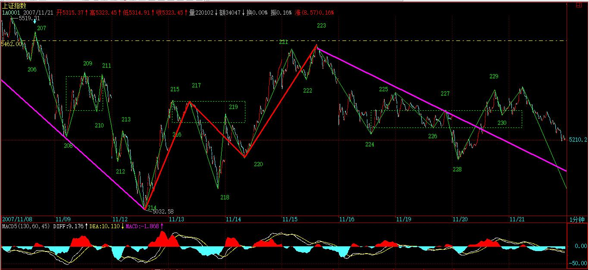
后面最大变数还是期货问题。
个股方面，今天是神油分裂，所以大盘是上下折腾幅度加大，这也是一个很好的控盘试验。大盘要想真站住，首先要神油合一都站稳。
月亮快圆了，大家都开始烦躁起来，是否又来一次天人合一的闹剧，很快就知道了。
至于其他个股，本ID现在都不想说太小盘的股票，像那个等比股票，【韶山映山红】等比数列，指的是600139绵阳高新，2007-04-11更名*ST绵高，现在叫西部资源。】这次调整，一下砍下来一半，这就是小盘股的风险。
【韶山映山红】600139绵阳高新，2007-04-11变更为*ST绵高，2009-06-04变更为西部资源。】
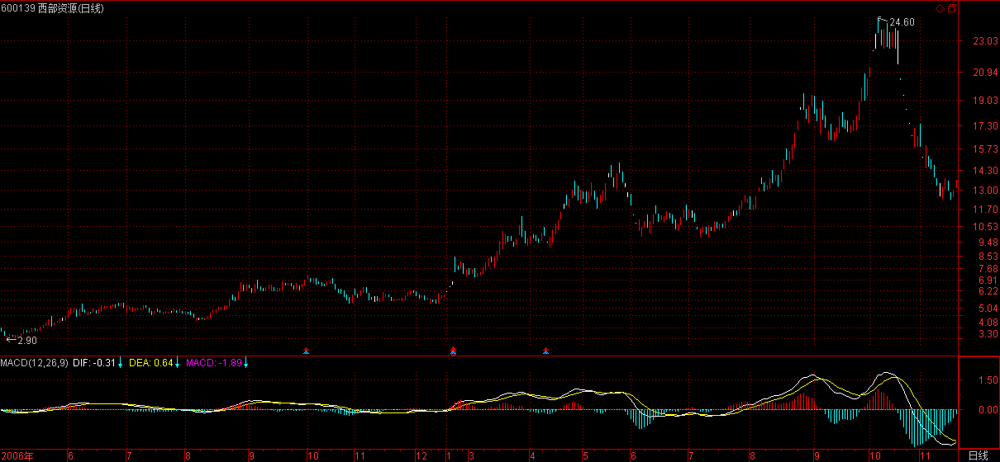
最近，其实本ID新搞了一个等差股票，盘子比等比大点，价格涨起来也就7元多，市值比等比更小，但也又是ST的，所以就一直没说。
其他的股票，都等着折腾的机会，不过大盘方向未定，本ID还有把现实照进梦想的想法。
小康了，接着是全面小康，还是更雄伟的富裕，这确实是一个很现实的问题。但有一点是必然的，昨天也说了，即使再次破位，陷阱的可能性也就大了。
又来电话，说人到了，没办法，不能多说了，要走了。
先下，再见。
(2007-11-21 23:00:35)
晕，下午到现在，竟然谈了三拨人，本ID现在真有点喜欢和新认识的人谈判。本ID发现，从419的角度，本ID这段时间谈过的这么多人，竟然没有一个能让人眼前稍微提高点亮度的，是不是搞企业的人都属于歪瓜裂枣型的？
废话不说了，说和谐吧。（红字和股票没关系，只是为了区别下面文章的颜色，别太神经。世界不是只有股票，只有股票的人生太无聊了，只有股票的脑子见财都化水去晃荡。）
什么叫和谐世界？如果和谐是一个形容词或者是一个名词，那么这个和谐世界，就是一个狗屁世界。一个形容词或名词后面，不过代表了一种僵化死寂的东西。
历史上，用形容词与名词杀人的例子，多得数不过来。民主可以杀人，革命可以杀人，自由同样可以杀人，只有鲁男猿人这种物体，才会幼稚地叫嚣所谓中国历史只有两个字：吃人。请问鲁男猿人的僵尸，有不杀人、吃人的世界吗？
有人说，人死光了，肯定国家、民族等等就死光了。但为什么本ID很少见到人？真正的人顶天立地，请问，现在还有多少人？还有，人死光了，还有僵尸的国家，行尸走肉的民族，这难道很虚幻吗？
和谐，应该是一个动词。和谐世界，其意义是，所谓的世界，是因为和谐这个动词而世界的。任何一个人，都有自己的所谓和谐的分力。人，说白了，都以自己的观点、行为分力着世界，都希望以自己的标准去分力着世界，而这分力，其实就是和谐这动词本身。
当然，在各种名词、形容词忽悠下，这分力会部分甚至全部地有了共同的指向，例如，在僵尸的国家，行尸走肉的民族里，在被资本所统治的全球化牢笼里，在被民主忽悠的先进国家垃圾堆里，名词、形容词统治了动词。
和谐世界，当然没错。但和谐是动词，和谐来自每个人的分力。“和”，动词，汇合的意思；“谐”，动词，商定的意思。世界，是一个合力的结果，而“和谐”，就是汇合所有的分力而最后商定，也就是合力。世界这合力，是所有的分力汇合而商定的结果，世界永远在这汇合与商定的动词动力中世界。
和谐而世界，世界而和谐，这才是真正的和谐。每一个人，都必须得到汇合，必须得到商定，这才是真正的世界，真正的和谐。让每一个分力去分力，去汇合，去商定，这才是真正的和谐，真正的世界。
而这个和谐，是永远的动词，每一刻都在新的汇合、商定中，都在创造中，都在世界中。
让形容词、名词的和谐忽悠狗屁去，这形容词、名词的和谐忽悠，也是这和谐汇合、商定的分力之一，但这不是合力本身，不是世界本身。
和谐世界，让每个人按照自己的所有潜力自由地伸展，让所有分力毫无束缚地绽放，世界在每一个的汇合与商定中在场，世界和谐。
[匿名] 不想飞
下次抢反弹，酒板是不错的选择，冬天嘛，唱点酒暖暖身，有益健康。
2007-11-22 11:32
[匿名] 不想飞
夜雨
匿名] 不想飞 2007-11-22 11:32:31
下次抢反弹，酒板是不错的选择，冬天嘛，唱点酒暖暖身，有益健康。
//
谢谢，你对大盘短线可以指点吗？
＝＝＝
现在观望为主，前两天有说过，直接看60分图的MACD的黄白线，能上零轴就抢，上不了，一旦转头向下趋势就闪。现在破坏度还不是很大，要是跌破5034就不要轻易介入的。
2007-11-22 11:53
[匿名] 不想飞
[匿名] 新浪网友 删除此人所有评论
沙老是个善良、重感情的可爱之人，他是纯粹站在广大散户的立场说话，他可以因为看到大家的感激之言而眼眶湿润；姐姐是站在整个中国经济大局的立场上说话，姐姐的一些举动虽然在一时会让我们小散有剧痛的感觉，但随着时间的推移，我们自然会从其中获益不少。
＝＝
同情救得了人不？眼泪能改变你命运不？只有在刺刀面前，才有可能让你变成强者。
2007-11-22 11:57
[匿名] 不想飞
[匿名] 请问不想飞
直接看60分图的MACD的黄白线，能上零轴就抢，
如果是从六十分线刚上又掉头向下的呢?多少都割,对么?
＝＝＝＝
这要先分析势的强弱，势强时一般是空头陷井居多，势弱时就得小心。
我是权证玩多，一般正股与大盘很少出现这种势弱的情况，一旦是这种势弱，其后的跌幅是可观的。
2007-11-22 12:11
[匿名] 不想飞
[匿名] 新浪网友
匿名] 不想飞 删除此人所有评论
2007-11-22 11:53:57
夜雨
匿名] 不想飞 删除此人所有评论
2007-11-22 11:32:31
下次抢反弹，酒板是不错的选择，冬天嘛，唱点酒暖暖身，有益健康。
//
谢谢，你对大盘短线可以指点吗？
＝＝＝
现在观望为主，前两天有说过，直接看60分图的MACD的黄白线，能上零轴就抢，上不了，一旦转头向下趋势就闪。现在破坏度还不是很大，要是跌破5034就不要轻易介入的。
====
我认为,自己观察,自己选择才对.别人,只能是参考.
记得不想飞几天前在下跌时说过.遍地是黄金等话,中线仓,暂时也不怕套等话.这几天又说不行,还需观望.其实这些话,大家都应该动态地看,动态地听.没什么,跌就选择买点,最多平盘一个月.新的方向就又会来.谁现在告诉我,牛市结束,那我立马走人.
万事,忍为上.忍得,利来.很简单的道理.
＝＝＝
谁说大盘不行了，谁说我中线仓有变的，你要喜欢短线被套与我又有什么关系。那天说的满地是黄金，难道不是么？20%的利润还不算黄金么，我这人也很负责吧，昨天也有叫钢铁板块走人的，前天也有叫600737减点仓，不算太坏吧？？？？？？我现在很明确的跟你说，这20%的利润我已经变现出来了，再很明确的跟你说，就算大盘跌到4500点，有的票也不会跌回我那天介入的低点，这不不够么？
要不是这里有老朋友我才懒得说呢，我可没博主那等胸怀“有教无类”，我只有“有类无教”
2007-11-22 12:37
[匿名] 不想飞
[匿名] 新浪网友 删除此人所有评论
TO:不想飞
沙老是个善良、重感情的可爱之人，他是纯粹站在广大散户的立场说话，他可以因为看到大家的感激之言而眼眶湿润；姐姐是站在整个中国经济大局的立场上说话，姐姐的一些举动虽然在一时会让我们小散有剧痛的感觉，但随着时间的推移，我们自然会从其中获益不少。
＝＝
同情救得了人不？眼泪能改变你命运不？只有在刺刀面前，才有可能让你变成强者。
======
沙老并不是同情，请先搞清楚。我很尊重沙老，一个年过半百的老者还在倾其所能用各种方式帮助广大散户。
你坚强，你是在刺刀面前变为强者的一员，那也没见你在这里给大家提供多少帮助。只会在每天离开的时候说个空洞的“好运”。印象中推荐的上海机电自打推荐的那天起就没好看过。
还是对自己要求高一点吧！对别人多宽容点吧！！
不想飞老兄！！
＝＝＝
不说了，说不过你们，股票又不是我家，我操那门心思，活该郁闷！
2007-11-22 12:42
[匿名] 不想飞
在这里，先向被我误解的朋道个赚，“对不起，误解的”
同时BS下影子兄，我可从来不拿家人开玩笑的哦，那天那个飞婆1000%是假冒产品。
2007-11-22 13:31
[匿名] 不想飞
汗，上帖打错字．．．．．“赚”没脸见人了晕～～～～
2007-11-22 13:35
(2007-11-22 15:32:48)
天说“月亮快圆了，大家都开始烦躁起来，是否又来一次天人合一的闹剧，很快就知道了”结果今天就应验了，看来大伙对全面小康真的充满了热情，虽然周六才是十五，但这热情已经要十三就闹剧一把，这也太热情了。
当然，站在纯技术的角度，虽然小的1分钟级别的第三类卖点早上就有了，但目前的破位是否能形成大的5分钟第三类卖点，还是一个未知的事。所以，多头目前也不是完全没机会，面包还是有的，就看能不能把中枢扩展成30分钟的，这样，后面的下跌，不过是一个陷阱。
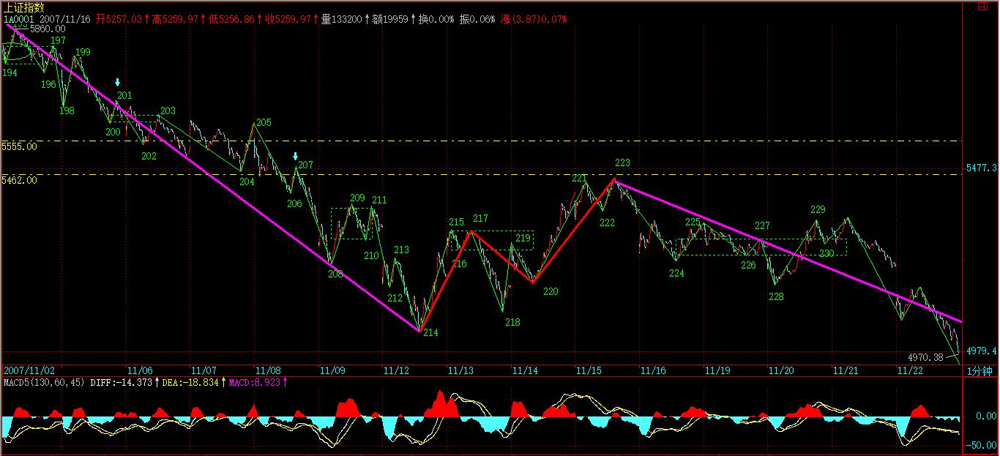
当然，是否陷阱，用是否出现大的第三类卖点以及出现后背驰出现的位置就很容易判断了。另外，中枢震荡操作的原则，从来都是冲不起来，在次级别上涨背驰的时候卖，跌下来，如果不形成中枢下移，而最多只是中枢扩展，那么就在次级别下跌的背驰时候买。这是最基本的方法，N堂课前就反复说过，这里再提醒一下。
上面说的，都是给有技术，或者对技术已经很清楚的人说的，没技术的，本ID一直给的建议还是小板凳。
中线上，如果这月收盘多头依然过于窝囊，连5月线都确认失手，那么，10月线就是下一个比较靠谱的支持。但站在日线角度，120日的半年线快到了，无论是否有效跌破该线，在该线上下至少有一个大反弹去确认5000点是否有效跌破。
个股方面，有技术的，可以对明年有前途的股票进行动态关注，长期关注一组股票，对熟悉股性是很重要的。你对股性熟悉了，操作起来就更有把握。
现在的操作，都要为明年去打算。对关注的股票，可以在反弹操作中动态介入，熟悉其股性，等中级调整完成后，多野的马也给你驯服了，那时候全面介入完全熟悉的股票，赚大钱还不是天经地义的事情？
其实，股票某种程度和做生意一样，不熟不做，做熟了才能赚大钱。没有点耐心，整天等着天上掉馅饼，那还不把天上做馅饼的都给累着了？
【韶山映山红】大资金不能随心所欲地控制股票走势，不能改变走势的结构，但是可以改造股性。关于股性，后面的课文多处谈到，可以做个专题，以后研究。★】
【韶山映山红】缠师原文关于“股性”的内容：
“同样的5分钟走势，为什么000426和600777差别这么大那？ 是不是也说明庄家可以改变走势？”“庄家当然能把幅度扩大，但结构是无从改变的。不管谁，都改变不了中枢的整体系统本身。”
“一个大级别的买的过程，某种程度上还兼备着改造这股票股性的任务，而且这也是一条底线，也就是能顺利退出的底线，在这个底部区域的股性改造中，也就是一个前戏的过程，没有好的前戏，不会有好的高潮。”
“但如果资金有一定规模，需要一定数量的筹码，或者要为以后的猎鲸活动储备经验，一个至少从第二类买点开始利用部分前戏的介入是必须的，其中也要如大资金一样，有利用前戏的震荡降低成本、增加筹码的必要。这有什么好处？最重要的一个好处，就是熟悉其股性，一个前戏都不参与的，怎么可能在后面的N次高潮与不应中得心应手？”
“性，说白了就那么一回事，所有人的基本运转模式都是一样的，也就是前戏-高潮的模式。股票也一样，其运转的模式，归根结底，就是不同级别的中枢震荡与移动的组合最终构成相应的前戏-高潮模式，都一样，但在一样之中，每个股票都有其股性，涉及频率、幅度、形态复杂度等等，这些，对于每只股票都是独特的，这也就是为什么，依据同一模式展开的走势，却呈现千差万别的最终图形。”
“当然，对于小资金来说，一定要选择股性好的股票；而对于大资金来说，股性是可以改造的，就如同没有面首是不可以面首的，只是代价不同而已，股票也一样，任何股票的股性都可以被改造，只不过需要的能量不同而已。”
“个股方面，有技术的，可以对明年有前途的股票进行动态关注，长期关注一组股票，对熟悉股性是很重要的。你对股性熟悉了，操作起来就更有把握。 现在的操作，都要为明年去打算。对关注的股票，可以在反弹操作中动态介入，熟悉其股性，等中级调整完成后，多野的马也给你驯服了，那时候全面介入完全熟悉的股票，赚大钱还不是天经地义的事情？ 其实，股票某种程度和做生意一样，不熟不做，做熟了才能赚大钱。没有点耐心，整天等着天上掉馅饼，那还不把天上做馅饼的都给累着了？”
“600569：这也是一只折腾不少人的股票，最大的题材，还是整体上市与收购，股性比较顽皮，没技术的远离。”
“000416：这是一个典型的兴奋过度例子，说的时候3元，不到5个月飞奔到了18元，然后就是痛苦的调整，短线关键是业绩关，长线总是要反复被折腾的，为什么？股性在那里，里面折腾的人的个性在那里，当然，大突破需要等待一个时机。”
“个股方面，一反弹就知道，低价股和题材股依然是最有活力的，这种弹性十足的股性，具有最好的操作性，要好好珍惜。再说一次，今年是低价与题材的天下，但一定要知道，没有单边，只有折腾，而折腾，来回短跑，产生的利润一点都不会比单边的少。”
今天比月亮惹祸更高兴的事情，莫过于英格兰队没吃到天上掉下的馅饼。早死早投胎，股市如此，英格兰队也如此，整天中阴也没意思。
最后，先和各位请个假，明天下午收盘解盘后，马上要开车去内蒙，5个小时，千万别下雪，否则还是有点危险。由于去的地方，是个大矿山，手机信号都有问题，所以周六、周日就写不了东西了，抱歉了。
先下，再见。
(2007-11-22 21:30:42)
本周关于以后内地大型股票上市应以A股为首发地的消息具有重大意义，同时回应了本ID前面反复强调的两个问题：一、A股蓝筹上市比例过低；二、优秀上市公司资源的保护与合理利用。
这个新政策一旦实施，按照《证券法》，像目前A股中超低流通比例的疑似非法蓝筹就将不会再增加了。如果这政策早实施，中石油的流通A股也不会是现在的40亿股，而应该是至少不会少于180亿股。试想，如果目前该股的流通A股数是180亿，还有可能上演48元开盘的闹剧吗？
可以说，蓝筹流通比例过低的问题一旦解决，将使得市场的运行结构有了一个合理的基础。如果最重要的A股都没有一个合理的运行结构基础，那么多层次资本市场的建构基础合理就更谈不上了。在某种意义上，该问题的解决是股权分置改革的一个深化过程，极为重要。不过，这里又有一个遗留问题产生，就是这些已上市的流通比例不足的疑似非法蓝筹如何达标必须限时解决，否则将使得这些品种成为稀缺资源，在指数期货推出后埋下严重投机的巨大隐患。
但这个运行结构基础的解决，只是一个层面的问题。而市场的构成，不单单是那些可交易的股票，一个同样重要的问题是，这些交易的成本是否在一个合理的范围内。无论多好的市场体制、结构设置，如果人为设置一个超高的交易成本，那么这个市场体制、结构设置的运行，最终都将面临危机。世界资本市场的发展历史表明，股票交易印花税的降低是一个总的趋势。市场的设置，本质上就是要让交易便利、成本降低，否则根本没有必要让市场存在。
目前存在一个严重的误区，就是认为目前的流动性泛滥，钱太多因此投机性太强，对这观点的谬误的批驳，在本ID前面的文章里已多有提及。一个结论性的观点可以再次表述如下：针对目前数量庞大的可上市资源，并不存在流动性泛滥问题，站在长远看，反而需要面对流动性不足的巨大考验。试想，目前A股上市企业不到2000家，而印度是我们的三倍以上。那么，A股即使要达到印度的规模，中短期内就至少需要4000家企业上市，请问，我们现在所谓泛滥的流动性能马上承接这4000家企业吗？
交易成本的设置是市场构建中最基础的问题之一，过高的印花税对市场百害而无利，至于其所谓的调控功能，也被事实所证明是完全失败的。5月提高印花税后，市场反而在5个月不到的时间内从3400点上涨到6100点，制造出了危害性更大的蓝筹泡沫，其调控效果如何，事实已经给出答案。
当蓝筹流通比例过低的问题解决后，把股票交易印花税重新恢复5月前的水平应该提到议事日程了。只有合理的交易成本，才有合理的市场环境，才可能使得更大量的上市资源得到更顺利的开发。
有人可能担心，目前降低印花税会引发新一轮投机，这种想法与认为5月印花税的提高能压制市场投机的想法同样荒谬。市场，更重要的是供给与需求，抑制市场投机最有效的方法从来都是加大供给。请问，目前这印花税水平远远超出国际水平，在全球化背景是绝对不能长远的，最终必然要被改变的，那么不趁着调整时改变，就等于错失一个纠错的时机，难道希望在上涨时才火上加油吗？
此外，更加错误的想法是把印花税的降低当成以后救市的手段储存起来。如果还有这种想法，那么就意味着管理思路上依然在过去的旧圈子里。而事实上，A股的历史表明，政策顶与政策底从来都不是真正的顶和底，1996年的社论没有制造最后的高点、今天5月的印花税同样没有，1994年所谓的777点政策底最终跌破后直到325点。【韶山映山红】中国历史上最著名的一次护盘，莫过到1994年申能股份在777点的护盘行情。1993年4月底，沪指最高涨到1392点。那时“绝对权重股”申能股份也才上市2周左右，并创了新高，但接下来由于银根收缩等原因，沪指最低跌到750点。之后政策面开始“护盘”，申能股份的地位类似现在的中石油，在1993年年底到1994年年初，特别是1994年1月份，申能股份死守8.18元左右位置。在8.18元位置上，每天都是99999手的巨大买单挂着，沪指也死守在777点附近，很多股民因此紧信“777点就是政策底，是多头生命线”。不过，到了1994年元月19日，申能突然崩溃，价格一直跌到3块多才停止，沪指也跌到325点才见底，很多股民在这波惨烈的杀跌中市值腰斩再腰斩，损失惨重。】所有真正的顶和底，从来都不是某个政策造成的。政策只是分力之一，不是合力本身，对此必须有清醒的认识。
管理市场，必须要有大思路、大眼界。现在市场最重要的事情，就是完善多层次的、有效率的资本市场，然后让更多的企业能通过资本市场成长起来，成为中国经济新的创造力与推动力的源泉。因此，绝对不能因为市场的一些波动而扰乱了思路、局限了眼界。而一个有效率的资本市场，显然不可能是一个交易成本比世界其他市场平均水平高出多倍的市场；一个以印花税的提高来调控投机行为的市场，也显然不可能是一个成熟的市场。过高的股票交易印花税已到必须调整时，这点，应该引起足够的思考与重视了。
(2007-11-23 13:57:18)
对不起，刚接电话，内蒙来接本ID的车已经到了，本ID一收盘就要走，否则那边晚宴等着，不好意思。
解盘周日回来补上，周日没什么特别的事，一定在晚上赶回来。
(2007-11-25 22:00:34)
回来了，不过要开打一个股权收购战，虽然和某上市公司有关，但只和其资产有关，不涉及上市公司本身。因此，这几天可能极端忙碌，有时候解盘可能都要推迟，例如明天。请各位原谅。
前面说了，在120天线附近，最坏情况也肯定有至少一次对5000点的反抽，大盘周五走势其实就来自演绎这剧本。问题在于，给多头最后一次机会，多头能否给点勇气，依靠120天线站住5000点，下周就要分晓。【韶山映山红】当日120天线4862.66点。】
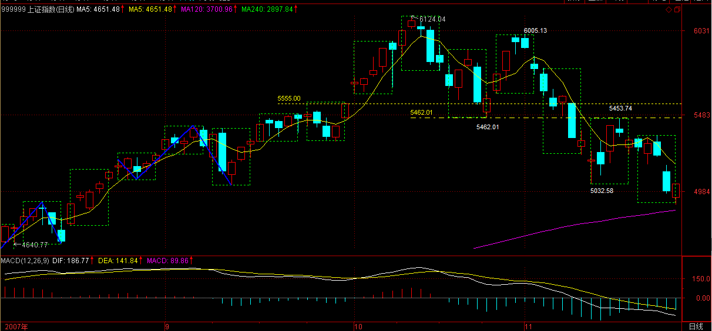
5163点是一个关键的位置，能重新上去，就是继续中枢震荡，否则就要严重考验120天支持。下周，是月线收盘，如果不能收在5月线附近，那么后面将要去考验10月线支持。【韶山映山红】5163应该是5分钟中枢的ZD点220，现在的历史数据是5165点。】
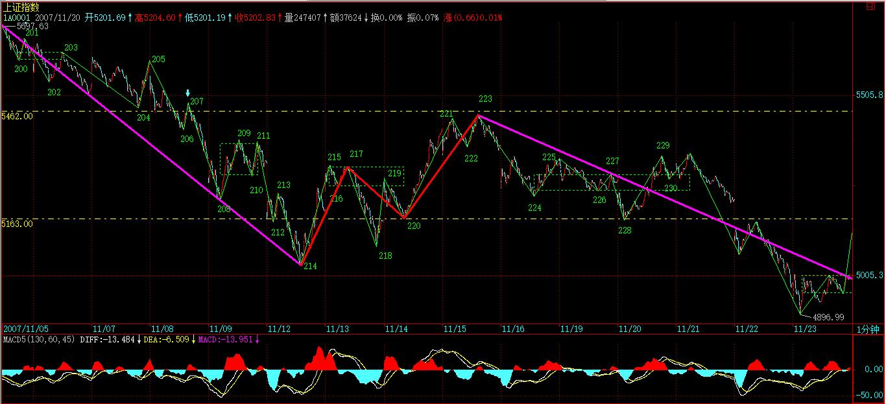
注意，从中长线角度，月线的顶分型成立后，唯一重要的事情就是是否延伸为笔，一旦延伸为笔，那么在月的底分型出来之前，大盘不会有任何中长线上实质性的上涨。【韶山映山红】月线顶分型已经成立，关注是否延伸为向下笔。一旦延伸为向下笔，也就是向下再走4个月K线，那时候就需要一个底分型来表征见底。这里表明，中长线是指月线笔级别的走势。】
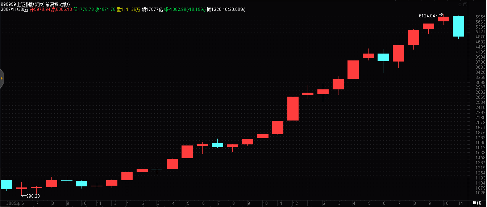
【韶山映山红】后来果然走出向下笔，之后有个底分型，成为中继，然后继续下跌，直到第二个底分型。】
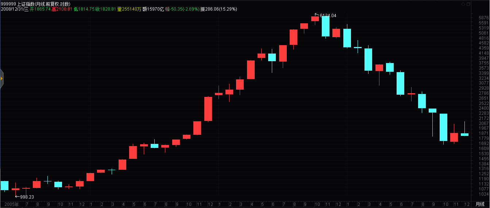
个股，题材股已经有些开始骚动了，除了那些特别兴奋的，一般大的骚动，还是在明年。中字头，在中石油完成其本ID在上市当天就说的类中国人寿走势前，都会被反复折腾，毕竟，好多人都怀有残暴的倾向，企图对这些中字头进行打击。
不过，打击只是为了拿到足够多以及足够便宜的筹码，只是在这样一种酷刑下，死扛永远都是痛苦的。本ID对老虎凳之类的玩意没兴趣享用，本ID只知道，在大买点出现后买，不需要享用老虎凳。
没什么时间写了，今天，一轮合同大战估计要通宵进行，本ID要忙去了。
现代战争中，最凶狠的往往是股权之战，往死里杀人吧。
先下，再见。
(2007-11-26 23:59:35)
抱歉，刚回家，还要忙。这股权之战开始白热化，无耻招数要开始用上了。其实，最无耻的就是打败仗。胜者为王，丛林法则。别讨论丛林法则如何无耻，如何不应该，在血腥之中，生存是第一位的，丛林中，难道还有比丛林法则更不无耻的？
股市同样是一个丛林，同样有着最伟大的丛林法则，就是这么血腥，怎么了？中石油，就要无耻地继续类中国人寿的走势。多头，站不上5163点，就是要被强暴地打击，没什么可讨论的，也没有可同情的。
不过，120天线应该有足够的弹性。也就是说，在这附近，还会来回折腾。现在的走势，本质上的多空齐杀才能活得很好。也就是说，本质上，任何的急跌都将构成大震荡视角上的空头陷阱，由于下月10月线将快速上移，因此，10月线与120天区间将为震荡留下足够的陷阱制造空间。
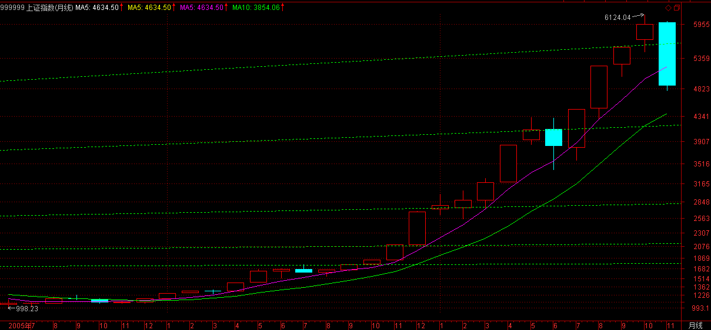
对于长线来说，250天是关键的，也就是所谓的牛熊分界，在没有有效跌破该线之前，谈论牛市的结束都是无聊的。
中短线操作，可以多关注120天、10月线等制造的空头陷阱，但必须暂时以反弹的眼光来进行具体的操作。
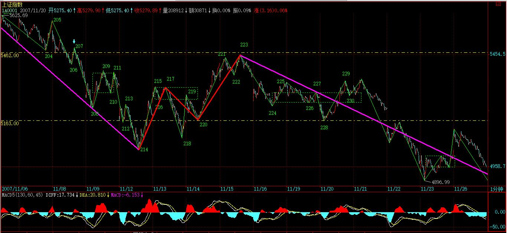
如果关注周线图的，可以看看6124点那周前后构成的顶分型的威力。那么要化解这个顶分型，必须首先要构造一个底分型，以此来完成一笔的运行。因此，后面的走势，就在一个底分型的探求与构造之中。站在这个视角，就会对后面N周的走势，有一个更大视角的把握。
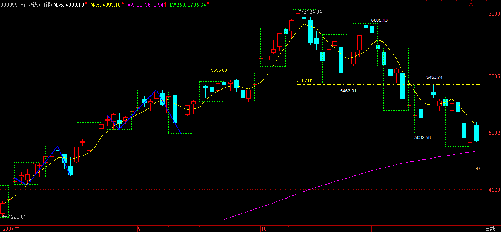
最近太忙，除了开盘那4小时，基本都忙不过来了。所以解盘都不能准时，但一定都会回来后补上，过了这几天最关键的时间会好一点。
抱歉，再见。
(2007-11-27 23:54:13)
这几天，真是疯狂了，时间也跟着错乱，这种状态还需要两天。写完这帖子，还要修改一个文件，再坚持两天吧。
今天的大盘，走得没什么可说的，5160点上不去后的延续性走势而已。
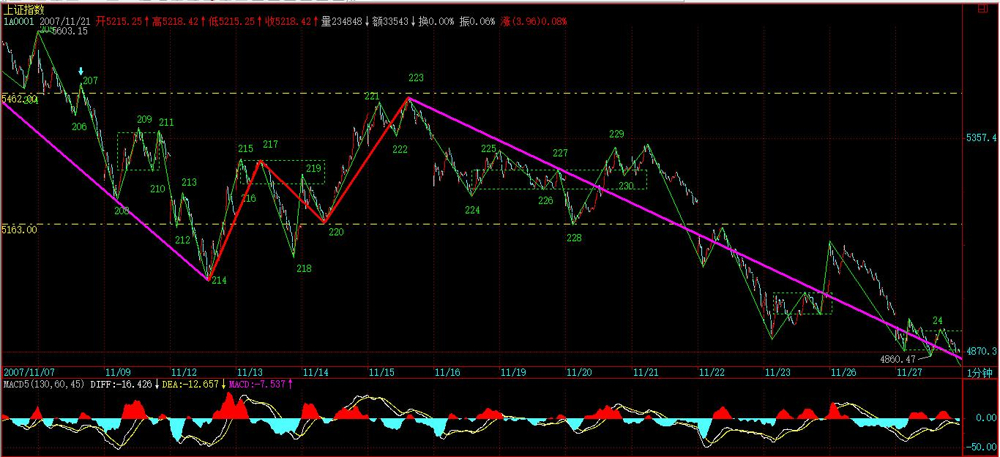
站在周K线角度，因为本周肯定新低了，所以这周K线肯定完成不了底分型的构造。站在周线角度，只要5周线不能重新站住，基本可以不看这个盘了，爱跌到多少都行。
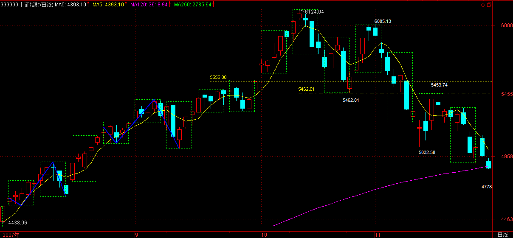
跌1000点是小康水平，1500点是全面小康，2000点是初步富裕，2500点中等发达，3000点是实现现代化，3500点叫什么好呢？请建议一下。
不要恨中石油，中石油这种怪物的出现，就是本ID前面反复说的超低比例非法蓝筹的恶果，现在不算什么，如果有指数期货，那才知道什么是非法蓝筹的威力。现在的问题是：为什么用脚趾头都能想明白的问题，怎么会一而再、再而三地出现在国家级的决策中？谁要为这种决策负责？
其实，什么政策都无所谓，关键是有一个负责的最低要求，敢出政策而不敢负责，或胡乱设计却无须负责，这就是最大的问题。
当然，中石油的走势，本ID开盘那天已经明确说了，就是类中国人寿，也就是说先狠砸，再狠拉，现在的问题是，砍仓的人太少了，不见点鲜血，嗜血的市场是难以兴奋的。这话虽然残忍，但这就是市场。
没有砍仓的胳膊大腿横七竖八，哪里会有底部？真相就是如此，该残忍就残忍去吧。
而真正的杀手，就等着那血腥的一刻，如豺狼闻到了猎物伤口散发的气味，好好闻哟。
先下，再见。
(2007-11-28 23:16:09)
今天稍微早点，因为明天是收购的第一个关键点，写完就要休息。这次收购，绝对是经典中的经典，现在，中国这领域最顶尖的公司都几乎参与其中了，以本ID看来，目前可能还只是戏的序幕，不过已经比其他的收购故事要精彩多了，有空，可以写个剧本了。
大盘今天继续无精打采的，
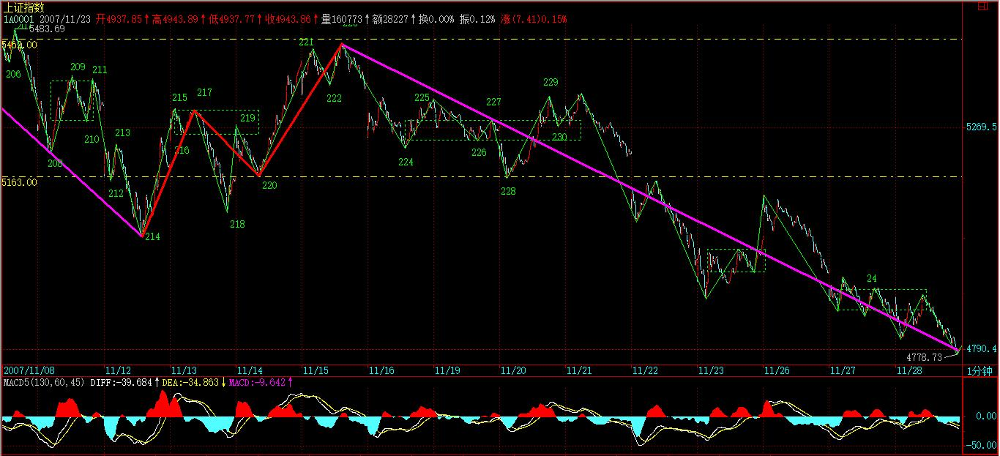
不过大盘确实已经进入一个基本的支持区域。首先，按双顶的量幅，也基本到位了；其次，周线上一个从2005年开始从来没有跌破的支持线也在不远处，下月开始，10月线也会上移到附近区间，诸如此类的支持因数都在加强。
而本月，一下跌了一个比小康还多的跌幅，因此，无论如何，下月肯定有反抽走势。当然，这月线收的位置也很重要，如果收在目前区间甚至更低，那么反抽后的压力还是很大的。
短线的选择无非是：先反抽还是先全面小康。先全面小康，反抽的油水大点；先反抽，那油水就少点，如此而已。
中线上，下月的走势很关键。如果是先下影后上去，那么走势会好点；否则，如果反抽只构成月线的上影，那么后面的压力就大了，全面小康的目标就太保守了，回补4000点上那缺口，来一个初步富裕，也不是太不正常的事情。
不过，短线可以开始关注这大反抽出现的时点，在这之前，不排除先有一个大的陷阱再上来，如果真如此，那么这反抽的意义就更大点。
请注意，无论多头空头的，没有陷阱的玩意杀伤力都有限。6100点之所以有点杀伤力，就是因为前面有几天精心安排的多头陷阱。这里学问多着了，如果能参透这多头空头陷阱，你的本事也就见长了。
不说了，累了，再见。
(2007-11-29 23:53:11)
今天的收购小决战出现比较好玩的局面，一场好戏，还要继续唱下去。从明天开始，大概可以逐步正常，这几天的时间错乱，对不起了。
大盘的走势，不太错乱。
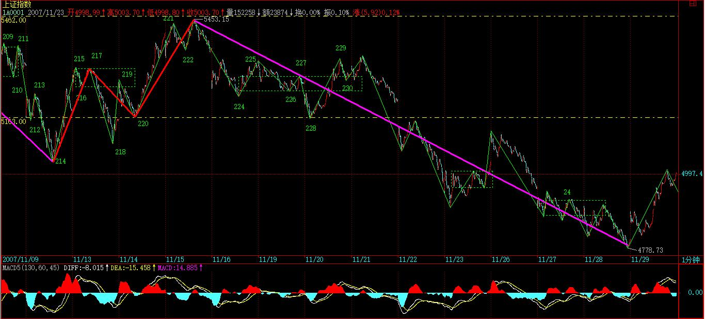
本ID在前面说了，跌破5000点，只是一个空头陷阱，而120天线有基本支持，即使继续下跌，也不过是继续构造空头陷阱。
今天大盘拉回5000点之上，使得一个更大级别的中枢在扩展开来。也就是说，5000点上下，将扩展出30分钟的中枢，后面的走势，就可以用这30分钟震荡的观点来观察，当然，如果这30分钟竟然震荡出第三类卖点，那么全面小康、初步富裕都不是什么奇怪的事情。这里无须预测什么，只要看好这震荡就可以把握了。
不过，如昨天所说，大盘没有选择在120天线下制造更大的空头陷阱，因此反抽的意义将有所减弱，首先看5周均线，如果能站上去，那么力度将大点，否则后面再次探底的压力依然不可小视。
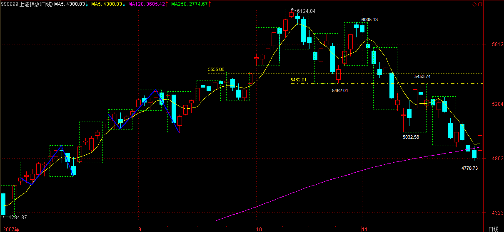
目前的操作很简单，就是继续以中枢震荡的观点处理，只是这次的震荡级别更大而已。操作上，依然是游击战，至于阵地战之类的玩意，就留给多头和空头。本ID的操作思路很简单，就是放冷枪，放暗箭，专挑多头空头没力的时间落井下石。
多空齐杀，找准机会落井下石、突施冷箭，这从来都是震荡行情中的不二法门。震荡中的利润，从来都是在多头空头的尸骸中炼出来的，虽然残忍，但却是震荡行情的生存之道。
市场中，最大的残忍就是把自己送上断头台；市场中，最崇高的道德就是踩着节奏错乱者的尸骸前行。市场就是市场，装道德孙子的，不是早死的就是即将死的，有必要听他们的道德说教吗？
当然，请一定注意。当你还没有成为钢铁战士之前，还有一个最好的全身之道：就是在大级别的调整中紧抱小板凳，不参与一切的反弹。
宁愿错过，绝不过错，伟大光荣正确的小板凳。
先下，再见。
(2007-11-30 15:20:29)
今天开始正常。
今天的大盘同样正常，也就是继续周末效应。
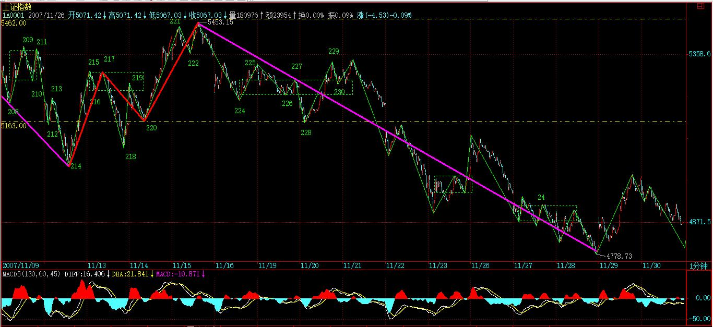
大的走势上，继续是5000上下的震荡。
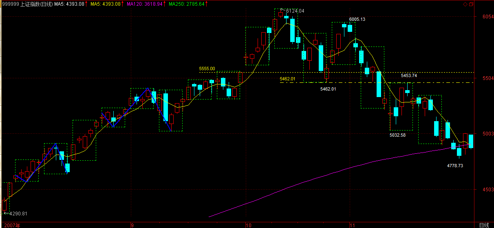
下周，反复强调的10月线上移，而5周线下移，因此，这构成大盘震荡的两个夹板。所谓夹板，就是上破是多头陷阱，下破是空头陷阱，总之，到处是陷阱，多头空头都没好日子过。
昨天，再次强调小板凳的伟大正确光荣，这是所有技术有问题的人的护身符。这护身符，从6100点就强调到今天。不过，就算小板凳是红宝书，也不能整天拿着跳忠字舞。如果想进步，最终还是要学会抛弃小板凳，学会在震荡中赚钱。
当然，如果真学不会，就不必要学了。并不一定每个人都需要变得英明神武的，如果每个人都这样英明神武，那么小板凳不是就要滞销？
至于震荡的操作技术，是必须磨练出来的，所以如果没有这种磨练的决心，还是买把小板凳，这样更有意义。
什么时候不再用小板凳？等大盘整个风给转过来了，底部经过确认后，才无须小板凳。现在，还在第一次的探底之中，也就是大盘的第一只脚还没有落地。而大的底部构造，往往需要两只甚至两只以上脚落地去确认，站在这个角度，小板凳还要旺销紧俏一段时间。
不过，由于本月大长阴线，因此下月一定有较大反抽去攻击本月阴线的实体部分，所以对于钢铁战士，以及准备成为钢铁战士的，可以密切关注一个大的反抽的准备与介入时机。
个股方面，很多题材股已经压制不住了，指数其实已经反映不了很多股票的走势，所以，如果你是钢铁战士以及准备成为钢铁战士的，更多应该关心个股的走势，指数走势只能成为参考。
技术上，周线、月线上底分型已经构造完成的股票，显然是最值得关注的。当然，如果你的手脚特别麻利，日线上底分型构造完成的也可以注意的。如果再进一步考察个股，就要看他在大的级别中是什么类型的中枢位置，这可以进一步确认较大力度爆发的可能性。
本周太累了，要好好休息一下。
先下，再见。
(2007-12-01 13:26:48)
生之为人，本来就是一件残酷的事情。
能生为人的，无非两种：一种是乘愿而来的；一种是被业力驱使而来的。第一种就无所谓讨论了，非一般人的境界；绝大多数的人，都属于第二种。
绝大多数的人，都是被业力驱使而成人的。显然，这业力的显发，达不到天甚至阿修罗的境界，因此就沦落为人了。那些所谓人是万物之灵的叫嚣，不过是人类的无知呻吟而已。
人，就是一个半拉子工程，不像地狱、鬼道等纯苦，也不象天界纯乐。有苦有乐，就此而人生。但归根结底，三界之内，无乐可言。就算是天界，最终也要轮回、堕落，就更不要说人了。
正因为人并不是什么纯善之辈，人的本质上，从投胎而来那业力中，就包含了堕落、恶毒的一面，因此，在人的世界中，恶毒、堕落、残酷，是永远的主题。
绝大多数的人，最后都是要到鬼道、地狱、畜生那里轮回去的。地狱门前僧道多，别以为自己相信了佛，就带了什么保险套。很多的所谓信，不过是偷心而已。
其实，根本无须说什么死后的轮回。就说这现实的人生，一句最残酷的话，就是注定绝大多数的人，都是不可能达到现实经济社会所谓成功的标准；而达到所谓成功标准的人，又绝大多数都是为自己种鬼道、地狱、畜生的种子；而更多的人，是在走向所谓成功的路上倒下时，同时为自己种下了鬼道、地狱、畜生的种子。
五浊恶世，每一步、每一瞬间都是陷阱，无论是现世还是后世的，堕落的陷阱永远包围着每一个人。
试想，如果人人都是步步莲花中，又何谓五浊恶世？
人，总有一种可笑的想法，似乎全世界的人都欠了他的。你自己随着自己的业力投胎而来成为人，本就是你自己的事情；你成了人以后，造愚蠢之业、失败之业、竹篮打水之业，又与别人何干？
世界，最可笑的就是求别人救之人了；请问，别人为什么要救你？别用所谓的慈悲来忽悠，对于那些偷心不死之人，最大的慈悲就是让他去死。为什么？早死，就少造点恶业，这难道不就是最大的慈悲？
所有的业，最终都是自作自受的，没有人能替代你，连佛也不可以。面对残酷的人生，如果还不放下偷心，那还是早死早投胎吧。
面对人生的残酷，逃避是没用的，偷心也是没用的，无论如何，只能直面。任何东西，必须置身其中，才能洞穿而过。不透过一切，就会被一切所业力。
“不识庐山真面目，只缘身在此山中”是纯粹的胡说八道，苏轼之流也就是饶饶舌。而更有下劣之徒，把不在此山中当成了信条，永远以一种旁观的心态去看，这样以为就可以不当局者迷了，因此，造就了一群夸夸其谈之徒，永远没有了投身其中的实行。
不入地狱，如何能空地狱？不入迷中，何能破迷？但绝大多数的人，都是说食数宝之流。而下劣者，就更是到处去找拐杖，他们的人生，就是一个找拐杖的闹剧，每天探讨的，就是天下谁是第一拐杖，有了这拐杖，就可以一劳永逸了。请问，这些人，你自己的脚去哪里了？
世界上没有什么拐杖，佛不是，菩萨不是，人更不是。一个双脚立地，一头顶天的人，为什么要拐杖？
更下劣之徒，整天把时间耗费在讨论拐杖的优劣上。试想，凭你那愚蠢的智力还能分别优劣的拐杖，能有用吗？
一切，最多只能是指月的手指，而月亮不在一切能指所指上。谁告诉你，他能把月亮给你，那都是瞎掰，你还是先看看他有没有手指吧。
其实，你自己才是真正的月亮，你还找什么月亮？
(2007-12-02 14:10:18)
现在，喜欢谈论打坐的人、书都特多，无非几种：一、人云亦云，抄几本佛教大词典、哲学小丛书就以为知道什么是打坐的；二、以外道的观点和实践来揣测的；三、以所谓科学的观点来胡诌的；四、把打坐当成一种人生游戏、风花雪月、琴棋书画的。五、把打坐当成练出神功大法的，神通而神经的。
对于第一种，编写佛教大词典、哲学小丛书的，不过是在各种意识形态游戏中混饭吃的可怜虫，这种人，当书虫都级别太低，吃他们的垃圾货的，能是什么货色呢？对于第二种，因为无明执着，困于不同境界而不自知，终成画饼；对于第三种，与科学同落六识之陷阱，划地自牢；第四种，这里的名人名师不少，最能蛊惑人，不过是自造恶业而已；第五种，有所得者皆妄，偷心不死，永无出期。
那么，何谓打坐？打，有两种含义：一、击毁；二、建造。坐，本义是两个人坐在土上，表示人的一种止息的方式，引申为居留、停留的意思。因此，从字面上讲，打坐就是击毁并建造所居留、停留的立足点。
一般人，目前的境界，都在一种散乱之中，这就是一般人所居留、停留的境界、立足点。一般人，一生中都在这种散乱的立足点、境界中居留、停留，到死都如此。注意，这不单单指意识、心念本身，一般人停留的散乱状态，也不单单就是意识、心念，而是人的所有活动都包括其中，这种状态，都是一样的，就是散乱。
所有人的打坐，都是从这个居留、停留的散乱状态、境界、立足点开始的，而首先要击毁这种状态、境界、立足点，建造一个新的状态、境界、立足点。
如果学过点量子力学的，大概更容易了解下面的描述：
人的业力以及共业所构成的巨大吸引力，使得所有人的运动都有一个最低等的运行轨道，就是散乱状态的运行，一般人，都围绕着这类似的轨道运行，虽然每个人的具体存在方式或者具体业力不同，但围绕的轨道状态是一样的，就是散乱级别的轨道。
打坐，就如同让电子吸收到一个更大的能量，然后可以摆脱这最低层轨道的束缚，跳到一个更高的轨道中去，这个轨道，就是粗住级别的轨道。对每一个人来说，这种对原轨道的逃逸过程，首先是对原轨道状态的一种击毁，然后是对新轨道状态的一种建造，这就是一个打坐的过程。
当然，粗住的状态，并不是最高级别的轨道状态，后面还有各种级别的轨道状态，都是在打坐过程中必然要碰到的。同样，这种轨道状态的跳跃，也不同都是一直进行的，后面也是有不同的层次区别的，这是任何一个打坐实践中的人都必然会遇到的。
当然，打坐，本质上就是生命的直面，能跳跃到哪个轨道、哪个层次，那是要下死工夫的，不是磨嘴皮子的事情。
以本ID对很多所谓名师所描述状态的鉴别，很多所谓的名师，连粗住的状态都没达到，不过都是在意识的圈子里打转，那有屁用。
注意，这种击毁与建造，是需要成就的。也就是说，有人可能瞎猫碰着死耗子地偶尔跳到别的轨道上去，但那没用，而是要成就。所谓成就，就是随时可以跳过去，这在现代，几乎见不到了，在古代，很常见，就是坐脱立亡，不想在人的散乱状态玩了，说走就走，一下就过到想去的生命状态去。
但一定要注意，这并不是究竟的东西，就算你真能坐脱立亡，游戏生死，但依然在生死之中。
当然，这种轨道逃逸式的过程，并不一定需要在死的时候才成就，而且这种过程，也不是单向的，完全可以从高的状态往低的回来。例如，如果觉得现在的皮囊和业力显现不爽，转投一个新的回来，这也是可以的。当然，前提是你入胎的时候，不能迷掉了。一般来说，要入胎不迷，可比坐脱立亡要难多了。
一定要注意呀，打坐不是修一下所谓的思维，安静一下心情那点屁事，那点屁事，生死一来，顶屁用。最低要求，至少要成就如下：就是当生死到来的时候，能够控制住那轨道的跳跃，逃出那生死业力的缠绕。
如果连上面这最低要求都达不到，那你的打坐是白打了，还是打飞机去吧。
(2007-12-03 15:26:04)
上周向5000点的反抽，刚好碰到6004点下来的下降通道上轨回头，现在，那上轨已经到4950点附近了，各位打开15分钟图，会看得很清楚，
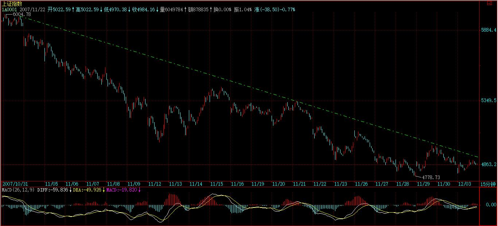
而且10日线也会下移到该位置附近。也就是说，这变盘的时刻马上要到来。
纯技术地说，或者就是突破上轨引发一次对6004点下来的总反抽，或者就是在总反抽之前再来一次空头陷阱，总之，这个反抽的到来已经是眼前的事了，唯一的区别，只是是否再来一次空头陷阱恐吓一下最后熬不住的人。
其实，站在个股方面，很多个股已经反抽不少了，指数走成这样，都是神油在做怪。不过那油也快破30了，第一基本目标也基本达到，唯一有变数的只是是否要破一下30恐吓一下最后的不坚定分子，这就对应了大盘是否要再走一空头陷阱的选择。
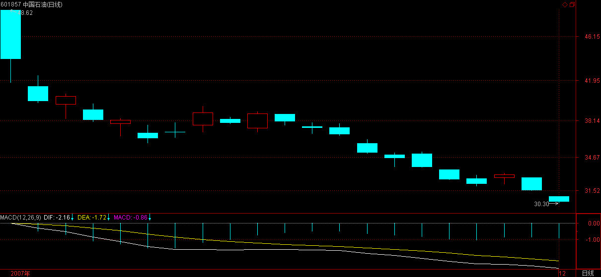
本ID曾经说过的个股，已经反复说过，一个都不会少地继续折腾下去的，其实有不少已经比大盘要提前走好了。其他个股，一旦大盘走好，都会有所反应的。
不过，这次反抽后，至少还有一次探底确认的过程。10月线，站在中短线角度，应该是比较重要的，至于下面，就是250天线的位置的，在跌破250天线之前，根本没有探讨牛市是否结束的必要。
中长线角度，目前，比较不明朗的是那经济会议是否有比较猛烈的措施，但无论那会议有什么措施，应该不会造成致命的影响，只是会被利用去清洗不坚定分子。
为了那收购的事情，某集团的头专门从香港跑过来，正在下面等着，本ID要去应酬一下，先下，再见。
本课目录
教你炒股票89：中阴阶段的具体分析阶级斗争，打土豪分田地。《货币战争和人民币战略》续七：和谐世界存在的N种可能快点解盘，否则要爽约。管理层终于又做对了一次和谐世界的真义又是月亮惹的祸过高的股票交易印花税已到必须调整时对不起对不起，晚到的解盘抱歉，刚回家，还要忙。时间错乱还有两天，抱歉了。120天支持终显威力周末继续效应人生之残酷教你打坐17：何谓打坐短线面临变盘